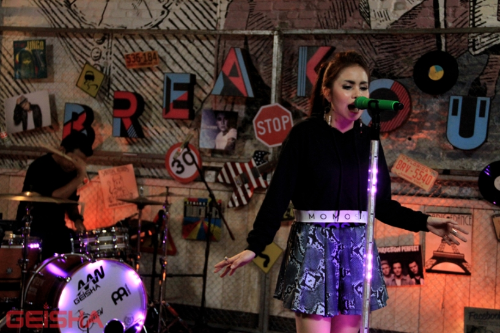
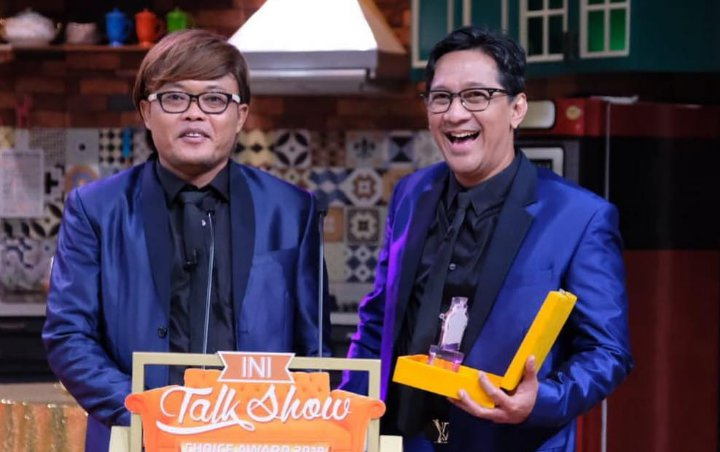
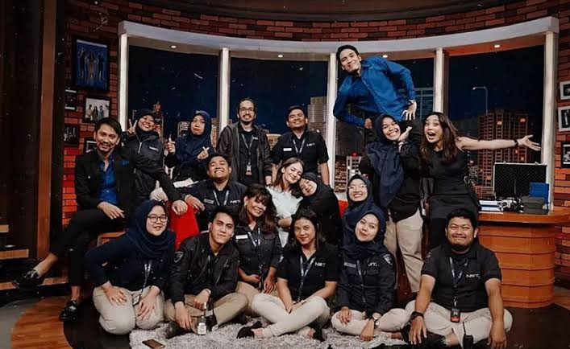

Breakout: Ketika Musik dan Video Klip Menemani Hari-Hari
Program musik yang menghadirkan berbagai video klip populer dan menjadi salah satu tayangan favorit pencinta musik.

Remember the Shows, Relive the Moments
NET Nostalgia merupakan proyek arsip digital independen yang berfokus pada pengumpulan dan penyajian informasi mengenai berbagai program acara yang pernah ditayangkan oleh NET TV. Website ini dibuat sebagai tempat untuk mengenang kembali tayangan televisi yang pernah menjadi bagian dari hiburan masyarakat Indonesia. Informasi yang disajikan meliputi profil program, kategori acara, cerita singkat, serta dokumentasi visual. Kami berharap website ini dapat membantu pengunjung menemukan kembali acara yang pernah mereka sukai dan mengenal program-program yang mungkin belum pernah mereka tonton.
2014-2020
2013-2024
2014-2017

Program musik yang menghadirkan berbagai video klip populer dan menjadi salah satu tayangan favorit pencinta musik.

Mengangkat konsep bincang-bincang dengan sentuhan komedi, Ini Talkshow menghadirkan suasana keluarga yang penuh kejutan dan tawa.

Dari obrolan bersama bintang tamu hingga tingkah lucu para host, Tonight Show menjadi salah satu tayangan yang meninggalkan kesan tersendiri.